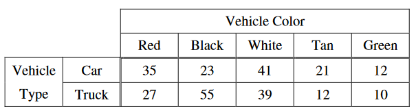

In order to plan its next advertising campaign, the Trendy Motor Vehicle Company is investigating whether the type of vehicle and the color of vehicle are related. Each person in a random sample of size 275 selected from the company's mailing list was classified according to the type (car or truck) and the color of vehicle he or she drove. The data are shown in the table below.

Which of the following procedures would be most appropriate to use for investigating whether there is a relationship between vehicle type and color?